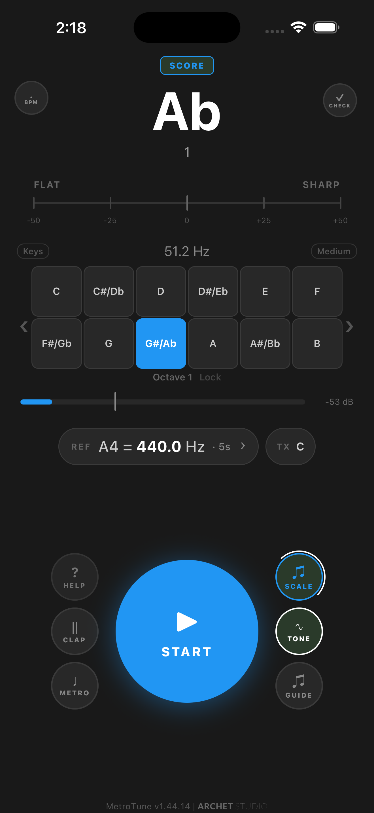
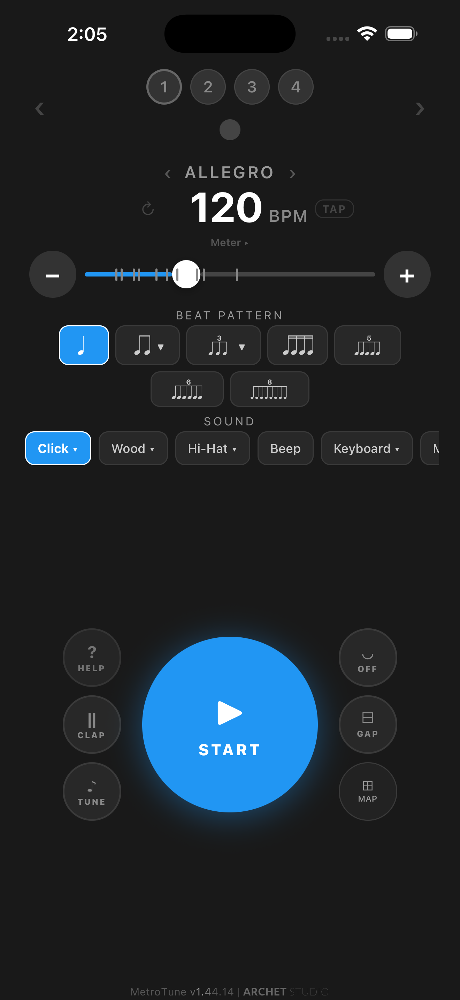
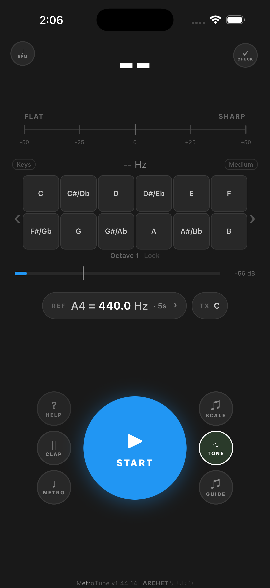

Real notation, not tab-style grids
Score View renders a real staff with clefs, key signatures, ledger lines, and accidentals — so practice feels like reading music, not configuring an app.
Metronome, tuner, and scale practice on one screen.
Real notation, live pitch detection, and a click track working together — so you can build timing and intonation in the same practice loop. Free core tools. No account required.
Free core tools stay usable without an account. Optional premium unlocks add extra practice tools and ad-free time.
What’s new & improved in v1.46 · June 2026
Already have MetroTune? Update on the App Store or Google Play to get everything new.
Score View renders a real staff with clefs, key signatures, ledger lines, and accidentals — so practice feels like reading music, not configuring an app.
Read your written notes on a B♭ clarinet, E♭ alto sax, F horn, or A clarinet — tap-to-play and Scale Practice automatically sound concert pitch.
Echo Mode turns the tuner into a call-and-response ear trainer. No separate app to download.
Give individual beats and subdivision notes their own sound profile — or mute them outright. Long-press a note to edit it, with clear indicators for custom and muted notes, and the BPM stays put while you shape the pattern.
Beethoven’s 9th, Mvt. 4 ships as a seed profile — six entries with shifting BPMs and meters — so new users see what a real tempo map looks like.
Score View
Switch to Score View and the staff appears: clefs, key signature, ledger lines, accidentals, rests — the closest thing to opening a method book inside the app. Notes light up as the metronome plays them, so you read and keep time at the same time.
“I specifically wanted a way to check my pitch while working at varying tempos — ensuring my intonation stayed rock-solid as I increased speed.”

A Day With MetroTune
Ten steps through a real practice session. No setup. No account. No permissions wall.
Tap START and a click plays at 120 BPM in 4/4. Everything else is one tap away from this screen. No account, no permissions wall.
Pick a subdivision shape — quarters, duplets, triplets, sixteenths — then long-press any beat or subdivision note to give it its own sound or mute it. Shape a groove no preset ships with, in seconds, while the BPM stays put.
Add scales to the queue in any key. Set count-in beats, loop count, gap between scales. Save the queue as a profile and reload it tomorrow.

Six categories: Foundations, Major Scales, Minor Scales, Arpeggios, Genre Scales, Drills. Tap any template to load it as a starting point, then customize.
Echo Mode plays a note, then listens. Match it within tolerance and the next note plays. Miss it and the app re-prompts with the attempt counter. Real ear training, no extra app.


Transpose the tuner for B♭, E♭, F, A, or ±octave instruments — clarinets, trumpets, saxes, French horns, piccolos, basses. The score stays in your written key, tap-to-play and Scale Practice automatically sound concert pitch, and a TX pill on the reference row shows the active transposition at a glance.
Five lifelike instrument voices — Tone, Clarinet, Brass, Organ, Bell — each with the correct overtone series and instrument character (bell hum, brass breath, Hammond drawbars). Set A4 anywhere from 392 to 470 Hz with one-tap presets for baroque (415), 430, 432, 440, 442, 444. Choose how long a tapped note plays: 1 s, 5 s, or hold forever.

Multi-entry sequencer with per-step tempo, meter, beat pattern, sound, accents, and measures. The 4th movement of Beethoven’s 9th ships as a seed profile — six entries across shifting BPMs and meters — so you can see how a real piece lays out before building your own.
Six base themes plus six pastel variants. Long-press the play button to swap. Pick the language that fits your daily life.

The microphone listens for two sharp claps in quick succession and toggles playback. Use it when your hands are full — bow, sticks, keys.
MetroTune is a metronome, a chromatic tuner, and a scale trainer that share the same engine, sounds, themes, and settings.



The metronome, tuner, and scale trainer stay useful on their own — no account, no sign-up. Want the premium extras? Unlock them temporarily by watching a short rewarded ad, or through optional paid access where it’s available. Either way, the core practice tools above keep working.
We’re actively building. If you have a feature idea, improvement, or something you wish your metronome could do, we’d love to hear it.
I built MetroTune because I wanted a more effective way to practice. I was tired of jumping between separate apps and frustrated by hitting paywalls on the essential tools I needed.
“I specifically wanted a way to check my pitch while working at varying tempos — ensuring my intonation stayed rock-solid as I increased speed.” I also needed a guide to help me master scale intonation, with a reliable reference for every note.
MetroTune is the result: a seamless 3-in-1 tool where the modules work together — on the Tuner page, the metronome ticks, pitch detection runs, and scale notes play in the same session. The essential tools work without an account or a paywall, and any premium extras stay optional. Built to help you master your craft, not manage your apps.
Free with ads on iOS and Android. An optional ad-free subscription is on the way for those who want it.
MetroTune v1.45 · Updated May 2026